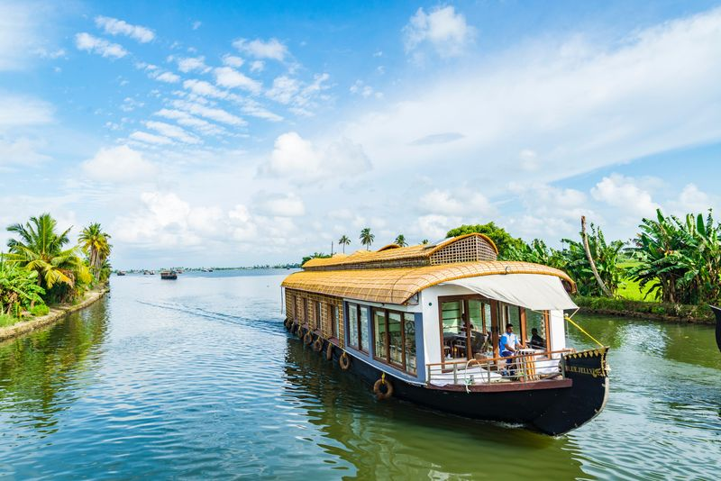

Best time to visit the God's own country

Our package
- Price : - On Request
- Tour Location : Munnar-Alleppey-Cochin
- No Of Days : 2 Night and 3 days
- No Of People : 3+
Day 1
Munnar has various stunning places to visit like: Mattupatti Dam, Echo Point, Photo Point, Kundal Lake, and Munnar Top Station.
Day 2
Checkout from the hotel in Munnar and depart to Alleppey (Alappuzha), popularly known as “Venice of the East.” It’s one of the most attractive places in Kerala. Check-in to the Houseboat and enjoy the scenic view of the Alleppey Backwater.
Day 3
Proceed to Breakfast and Checkout from the Houseboat. Depart to Cochin, popularly known as the “Queen of Arabian Sea.” Cochin has numerous places to explore like: Mattancherry Palace, Dutch Palace, Police Museum, Lulu Mall, and Vypin Beach.
Package Inclusion:
- Accommodation in Hotel.
- Food: MAP Plan.
- Jeep Safari.
- Campfire.
- Sightseeing as per itinerary with Suitable Vehicle.
- All Parking and Permit Charges.
Package Exclusion:
- Train Fare / Air fair etc..
- Other Personal Expenses.
- Entry fee for any place of visit.
- Sightseeing which is not mentioned in the Package.
- Extra Food / Charges for which is not mentioned above the Package.
- unavoidable circumstances or natural calamities, itineraries may be changed or reversed; however, all inclusions in the itinerary will remain the same.